熟練の職人技
素材・製法・歴史を、動画と年表でお見せします。
ストーリーを見る →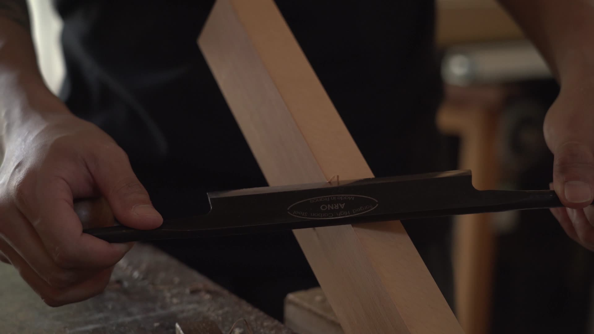
Collection
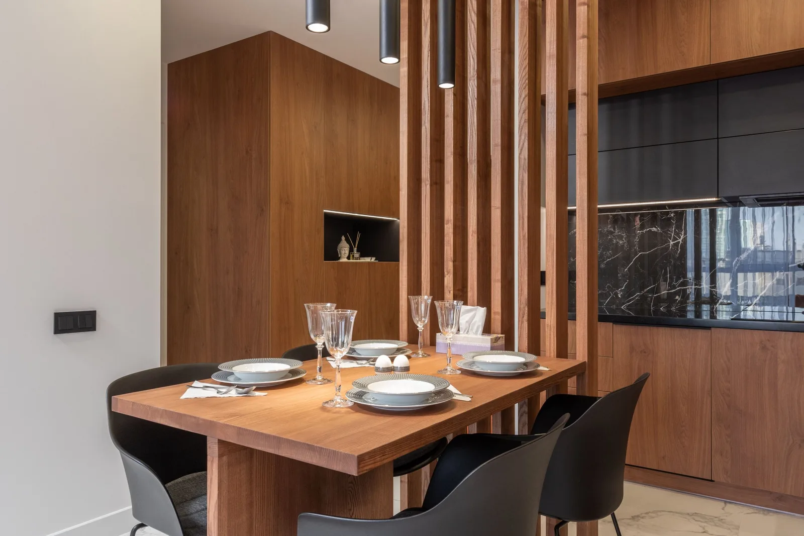
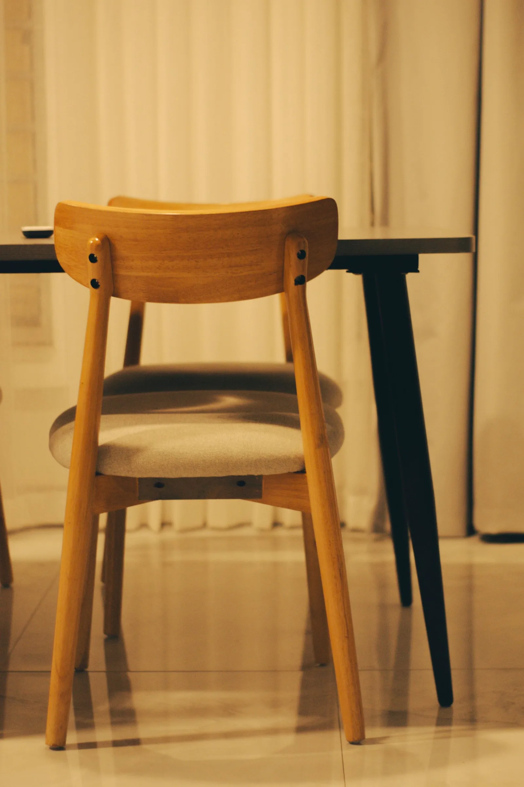
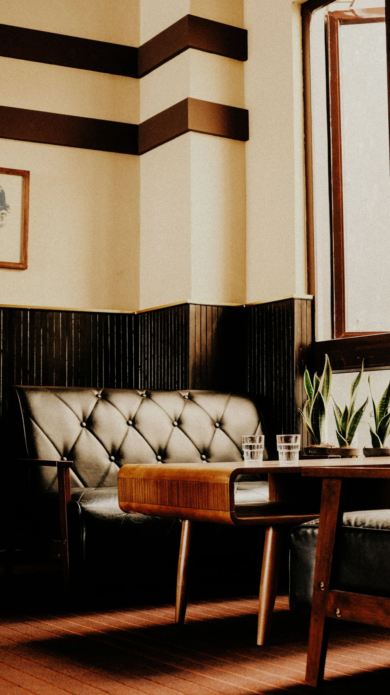
Chairs
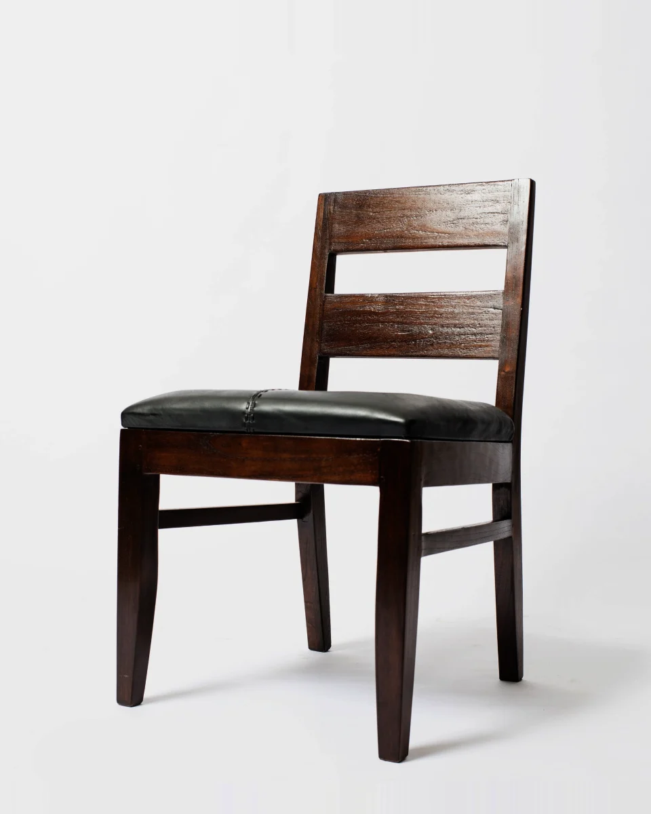
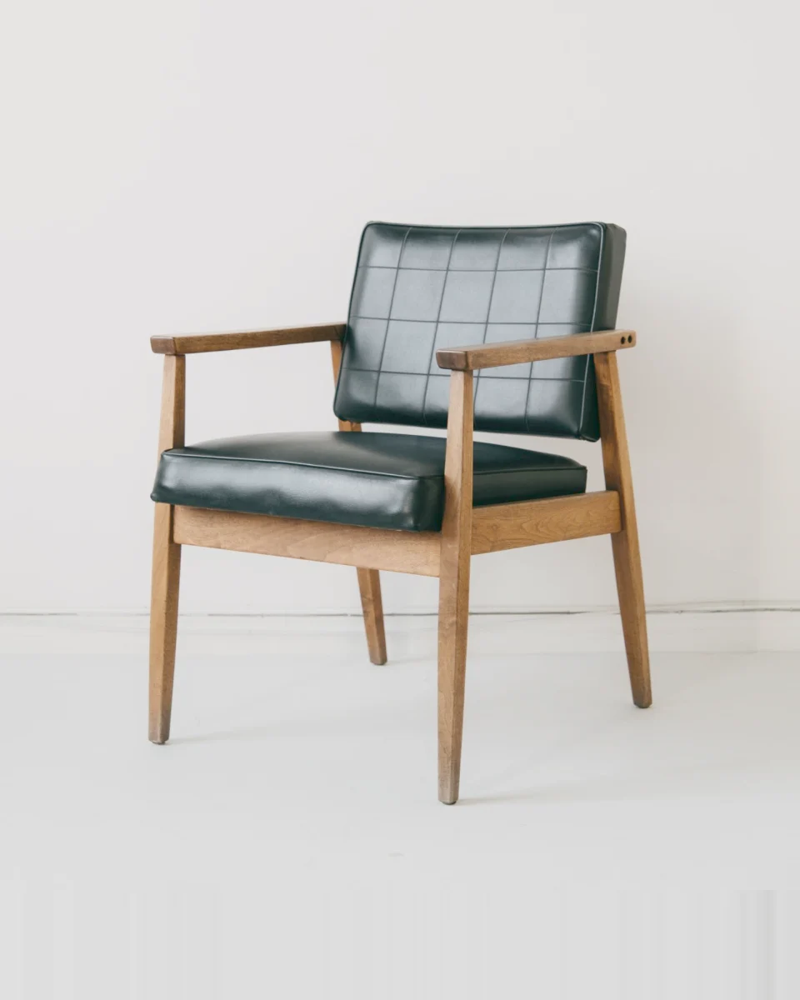
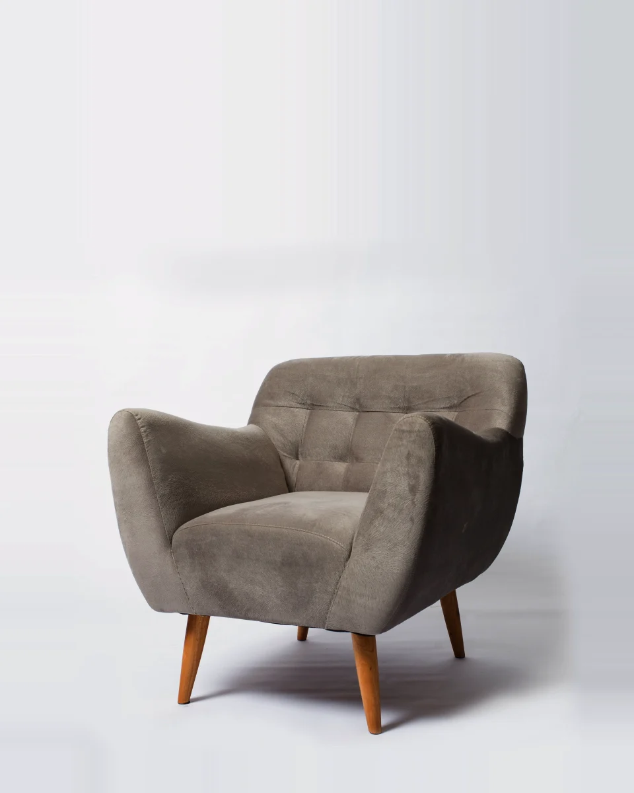
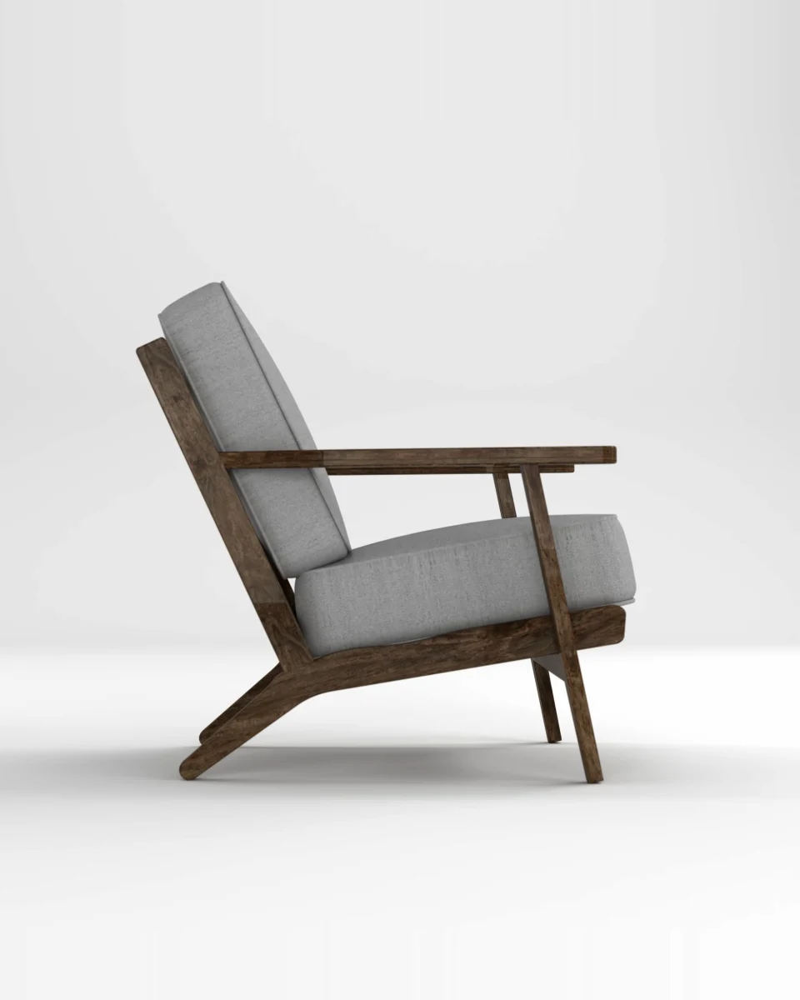
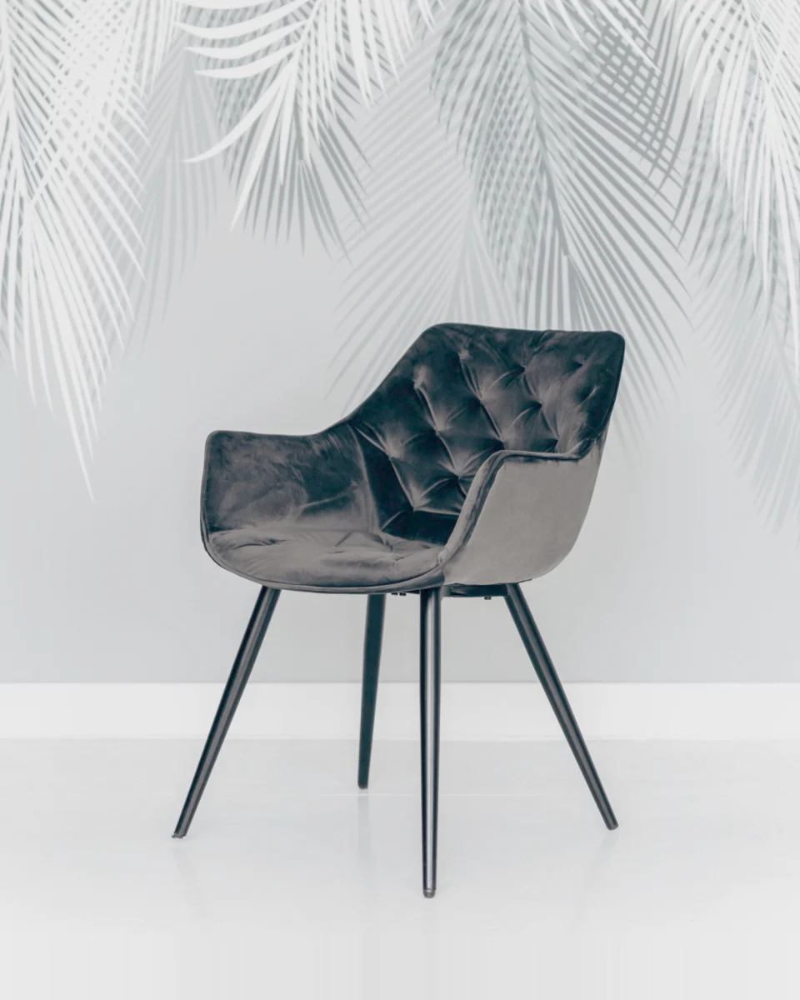
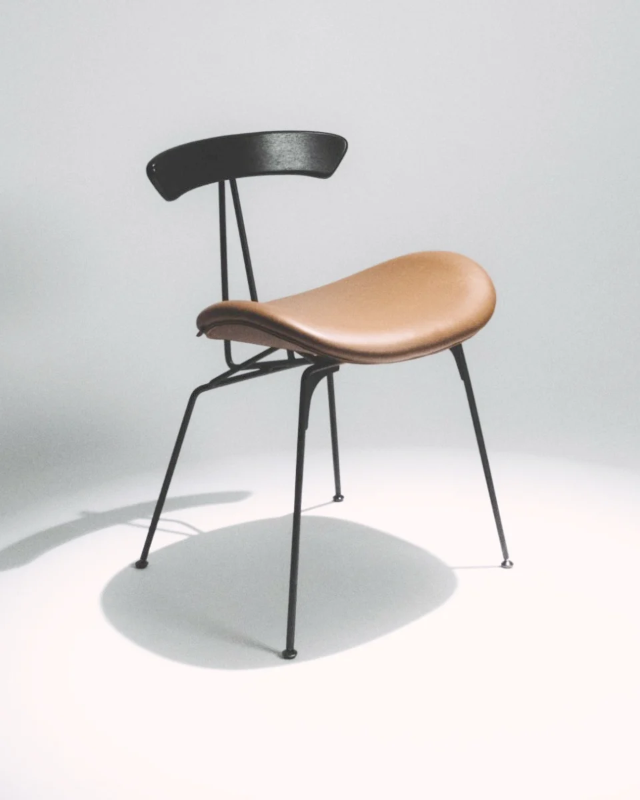
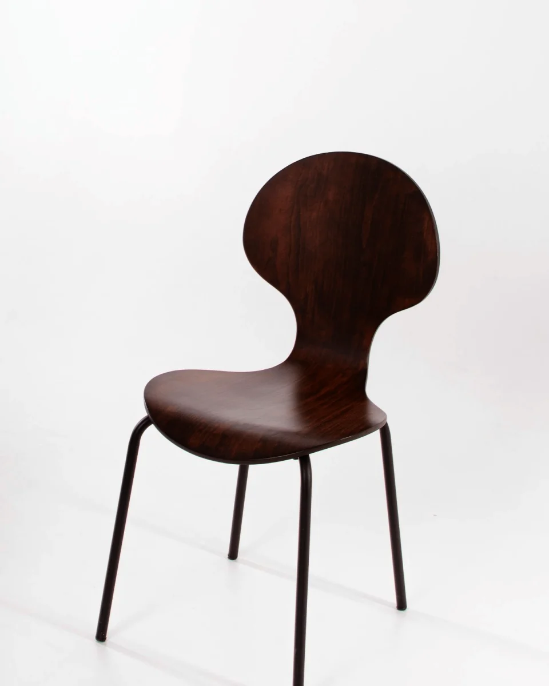
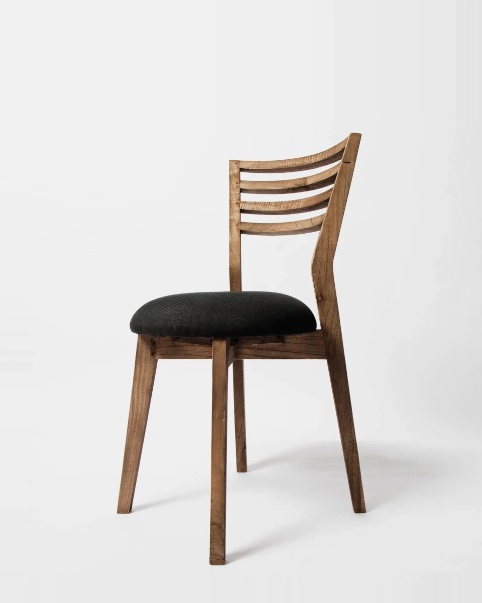
HOVER TO PAUSE ／ 長押しで早送り・巻き戻しSWIPE ／ 長押しで早送り
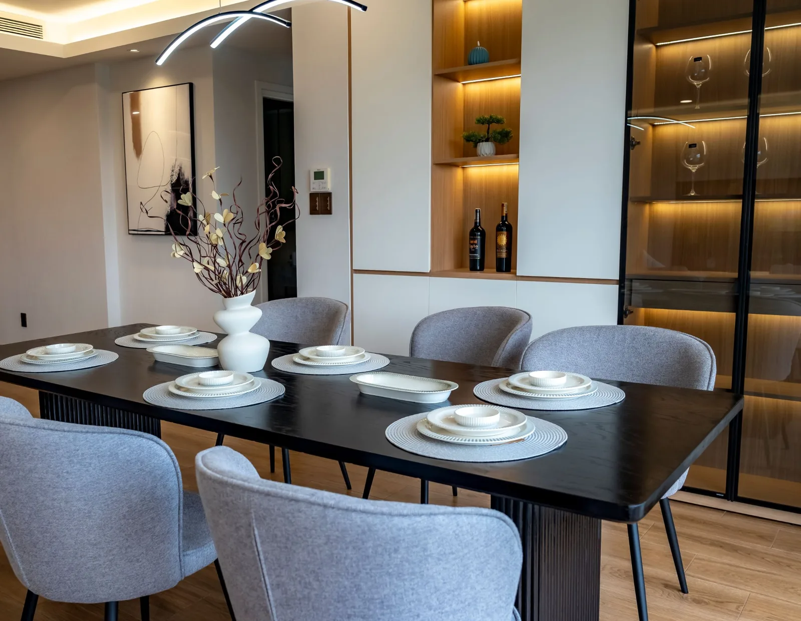
※寸法・素材・納期は仮の内容です。サイズ・樹種の変更も承ります。
Your Concern
おしゃれなだけでは、家は完成しません。創業135年、職人が一脚ずつ仕立てる家具は、あなたの住まいの寸法・素材・空気感に合わせて形になります。ご相談から納品まで、責任を持って伴走します。
Our Story
※年表は仮の内容です
Works
※写真・映像はイメージです。実際の納入実績は準備中です。
「図面に描いた空間が、そのまま現実になりました。十年後の姿が、今から楽しみです。」お客様の声（サンプルの文章です）
After Care
高額な買い物だからこそ、納得して選んでいただきたい。素材の選定から伝統の木組み、納品後の張り替え・修復まで、すべて自社工房で一貫対応します。
座面・背もたれの生地や革を新しくします。クッション材も状態に合わせて入れ替えます。
目安：2〜4週間 3万円〜（仮）天板や脚の傷・色あせを削り、塗装や漆を仕上げ直します。木目はそのまま活かします。
目安：3〜6週間 5万円〜（仮）ぐらつきや割れを構造から診断し、必要な箇所だけを直します。金具の交換も承ります。
目安：2〜5週間 2万円〜（仮）※修理の内容・目安期間・料金は仮のものです。施工前後の事例写真は準備中です。
Process
Q & A
全国へお届けします。設置まで当社スタッフが伺います。オンラインでのご相談も承ります。
製作の進み具合を、節目ごとにご連絡します。遅れが見込まれる場合は、事前にご相談します。
仕様確定時にお見積りをご提示し、ご契約時と納品時の分割でお支払いいただきます。
製作前に採寸とご確認を重ねます。製作開始後の変更は、内容に応じてご相談ください。
ご購入年を問わず承ります。まずは状態をご相談ください。
※回答の内容は仮のものです。
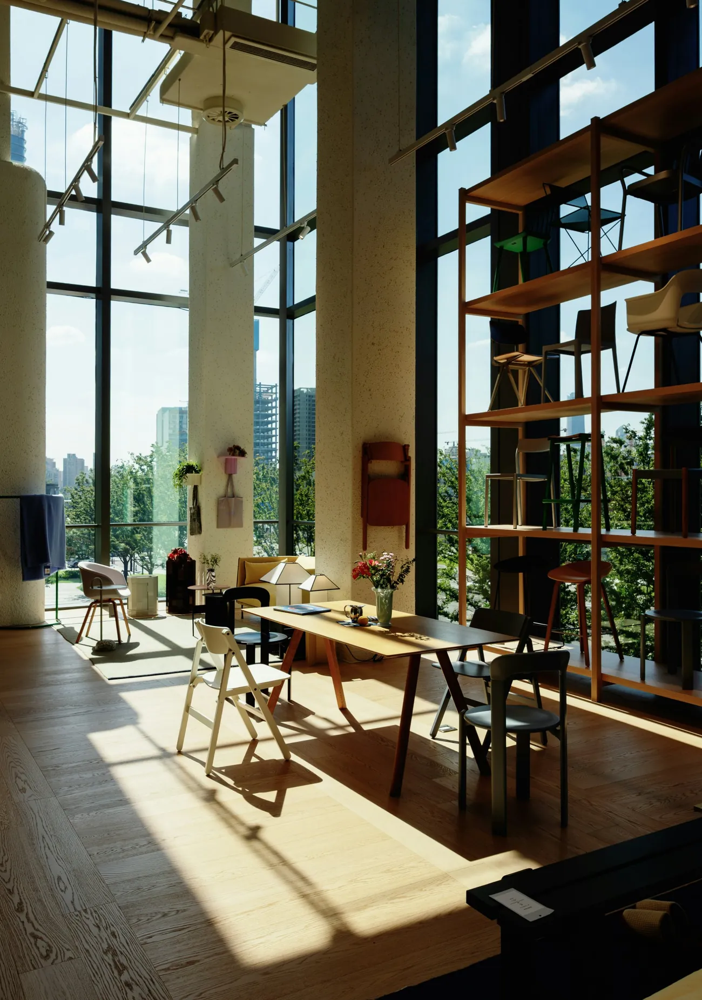
For Architects & Developers
図面段階からのご相談、別注寸法・樹種・仕上げへの対応、ホテルやレジデンスへの一括納入まで、専任担当が伴走します。